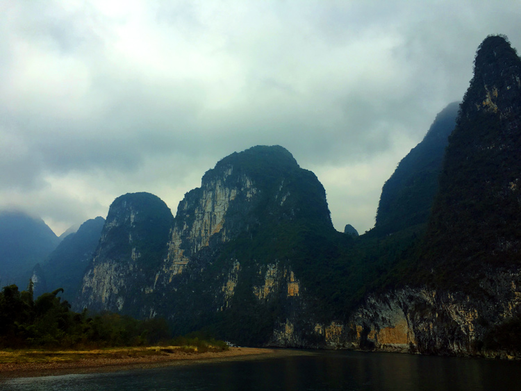
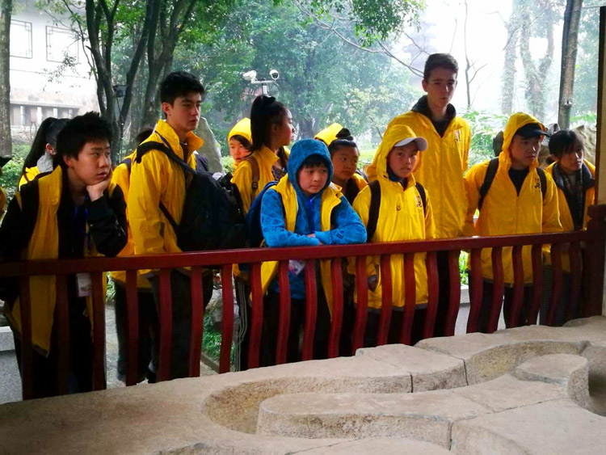
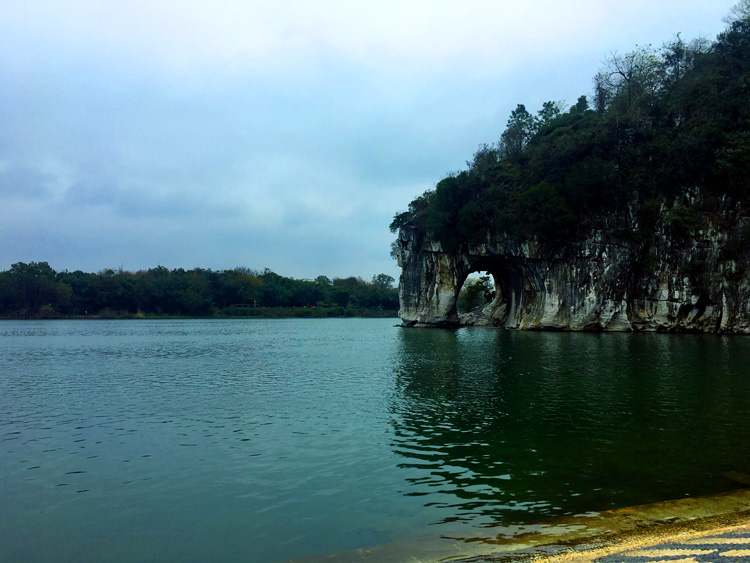
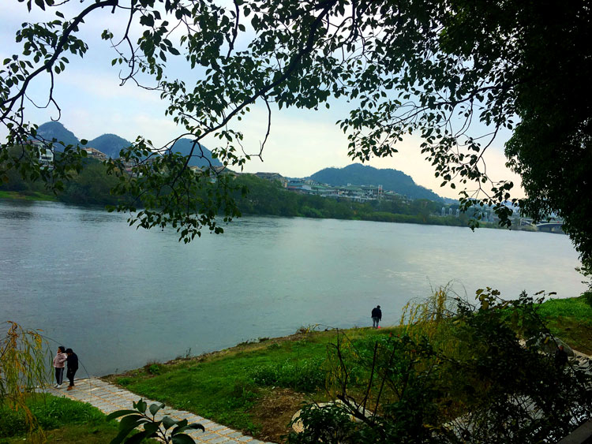
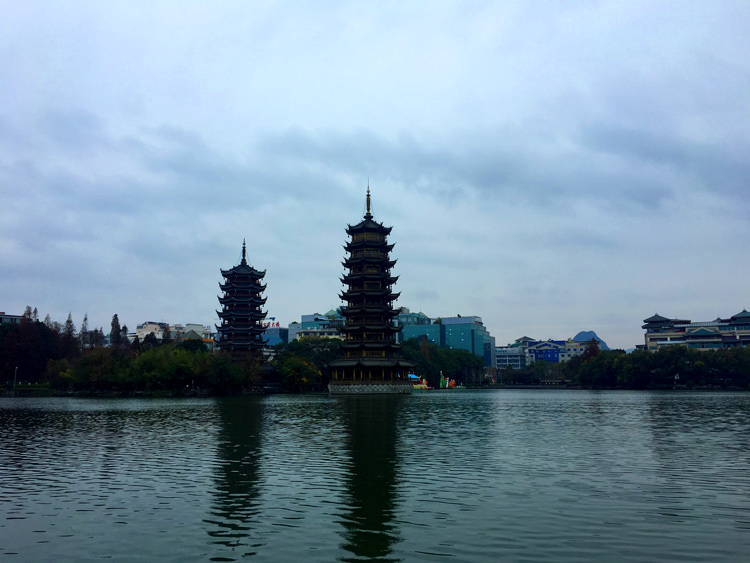
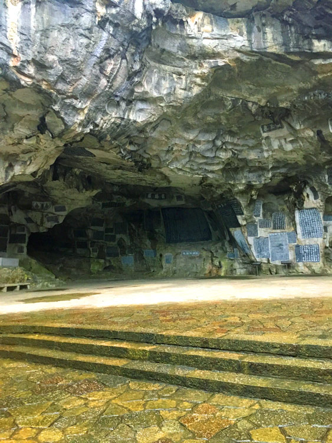

A bit about the city
Guilin is located in the northeastern part of Guangxi. It has been named the most picturesque place in China.
It is a great place for sightseeing at any time of the year with its pleasant subtropical climate. In autumn, when the sweet osmanthus is in bloom, the air of Guilin city is filled with a sweet fragrant smell. The name of Guilin, means “forest of sweet osmanthus”.
How it all started
I met all of my friends on this “Chinese Full-Immersion Summer Camp” which starts in late December and finishes in early January at a chosen city. Each year, parents of the child around 10-18 years old would apply for a space. When the child gets in, parents would normally be contacted for an interview. After the interview, there would be a series of teachers who pick out around 15 children.
I’ve been to Summer Camp twice and each year it’s always different. Last year, I went to Guilin and we stayed in the university dorms (Guangxi Normal University). It was 15 days of intensive studying (full chinese), visiting around the city, lectures, dancing and understanding our chinese roots. We represented Wellington and there were other groups around the world like Auckland, Melbourne, Indonesia and Malaysia. By the time, the 15 days were over everyone has made friends with each other. In fact until now, I still talk to my friends from Melbourne.

Hills
Diecai Hill
The hill is located in the northeast of Guilin by the Li River. Diecai Hill (Brocade Hill) is one of the most popular local attractions. It is a place known for its amazing scenery and stone carvings. There is a wind cave on the hill and also four small hills (Yuyue Hill, Siwang Hill, Crane Peak and Bright Moon Peak).
Elephant Trunk Hill
The Elephant Trunk Hill is famous for the size of the parabolic arch which is along the Li River. It is one of the 1,000s of karst hills that cover Guangxi Province. Normally karst hills are made of limestone that are weathered into shapes that represent animals or objects. The Water Moon Cave, which is located between the trunk and the body, is a semi-round cave that is submerged into the water. It resembles a round full moon and the unique scene of the reflection of the moon inverted in the water and the cave above the water forms a full moon makes the Water Moon Cave special and attractive.
The photo resembles an elephant drinking water from the Li River with its long trunk.


Li Jiang River
A boat cruising on the beautiful Li River is the highlight of your travel to Guilin.
There’s a boat ride from Guilin to Yangshuo. The boat ride goes past mountains with different unique shapes which have inspired and fired the imagination of each visitor coming to Guilin. The length of the river is around 83km from Guilin to Yangshou.
Riyue Shuangta Cultural Park
The Riyue Shuangta Cultural Park (Sun and Moon Pagodas) in Guilin is located at the heart of the City of Guilin.
The sun (Yellowish one) Pagoda is 41 meters tall while the moon (Greyish one) pagoda is 35 tall. The sun and moon pagodas were rebuilt in Rough Lake in 2001 on the basis of the paragons in the Tang Dynasty.
The right Pagoda is the Sun and the left Pagoda is the Moon.


Guihai Stele Forest
The Museum of Guihai Stele Forest is located near the center of Guilin City.
The museum displays and preserves over 110 ancient rock inscriptions and carved stone tables, which were found in the Guilin region.
The right Pagoda is the Sun and the left Pagoda is the Moon.